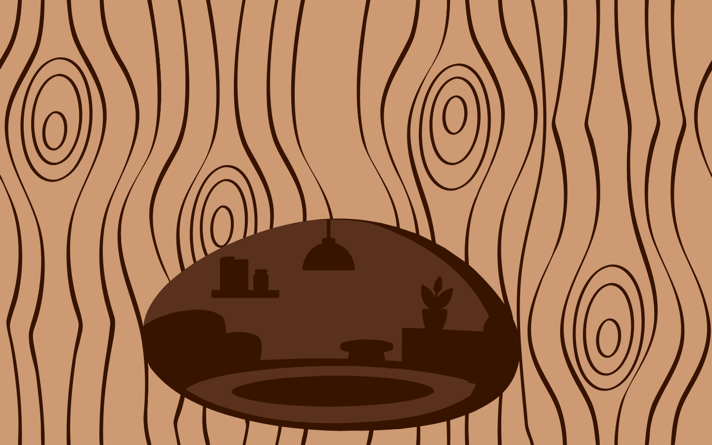
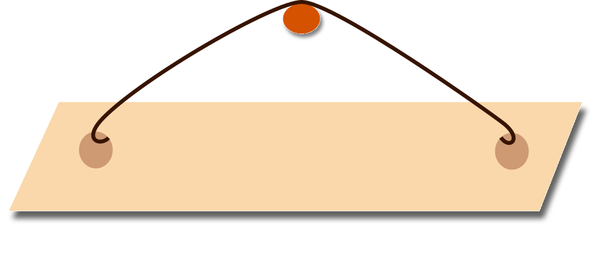
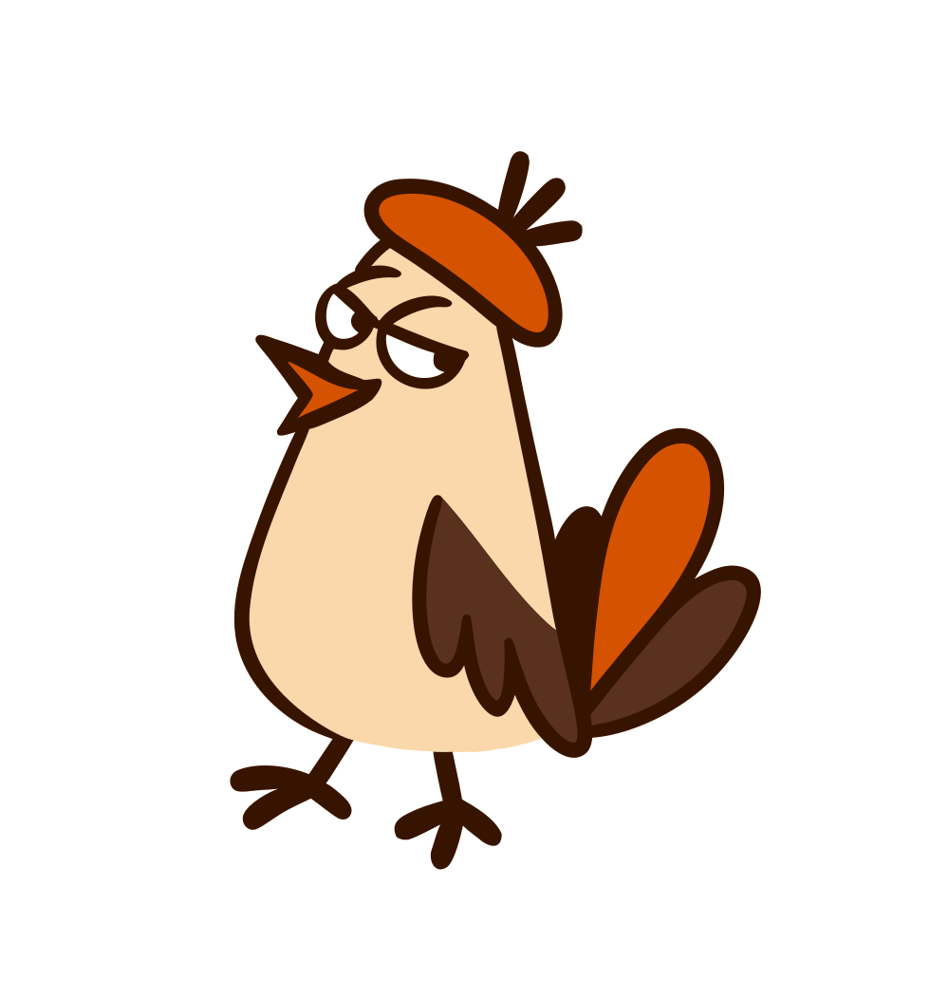
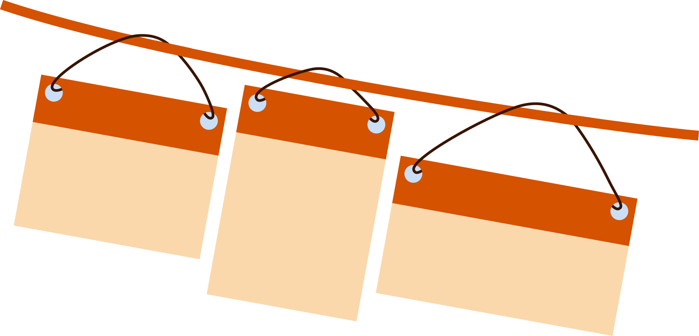
Wermut — переходная антиква
со сжатыми формами, острыми
деталями и характерными срезанными засечками. Шрифт выразителен в крупных кеглях,
но подходит и для блоков текста.
Авторы хотели создать антикву со сложным характером — изящную
и строгую, но при этом колючую и декадентскую. Ориентируясь на Scotch Modern и Times, они стремились соединить классическую основу
с необычными деталями.
Гаянэ Багдасарян и Вячеслав Кириленко — дизайнеры шрифтовой студии Brownfox. Шрифт был создан ими в 2016 году.
Он вышел настолько красивым, что одна сорока украла его и продает в своей лавке.
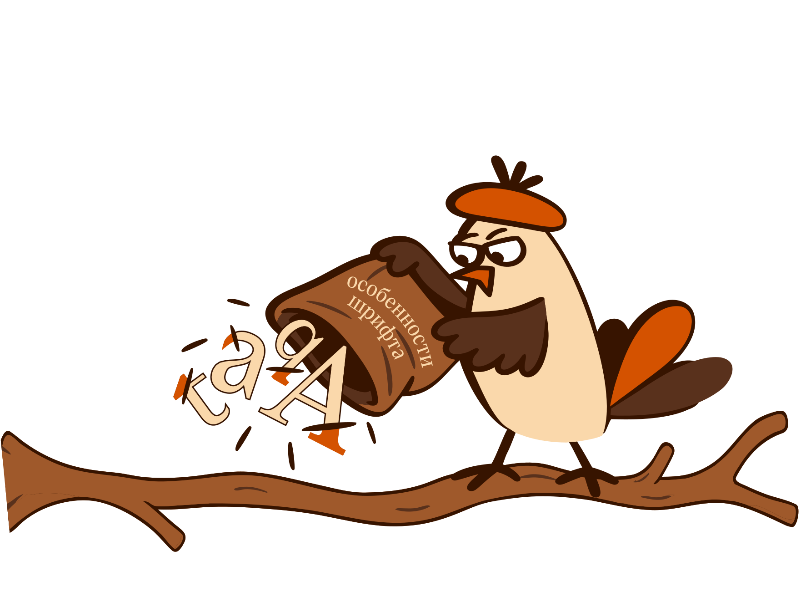
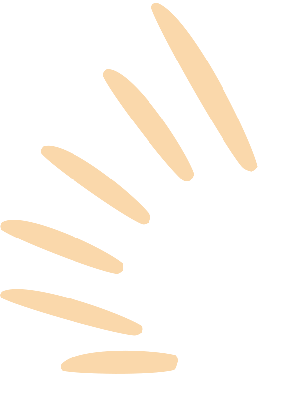
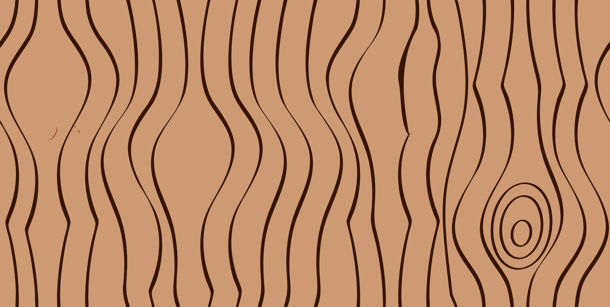
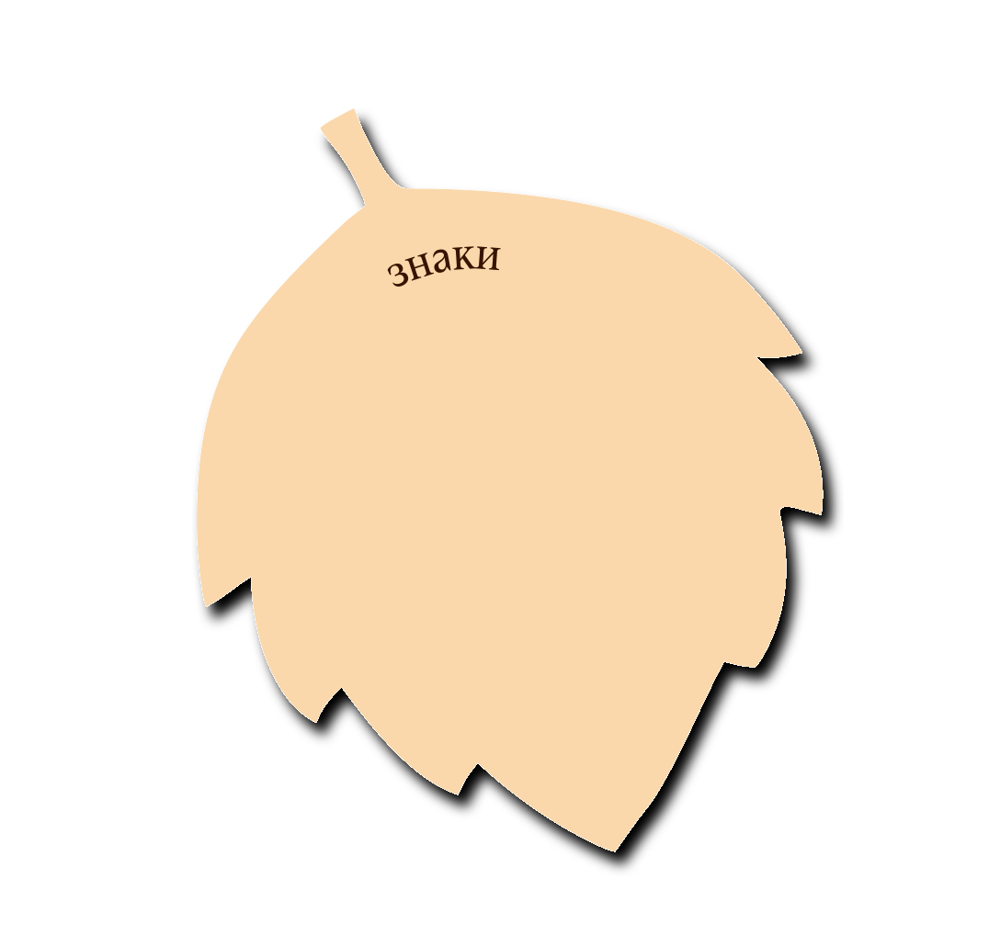
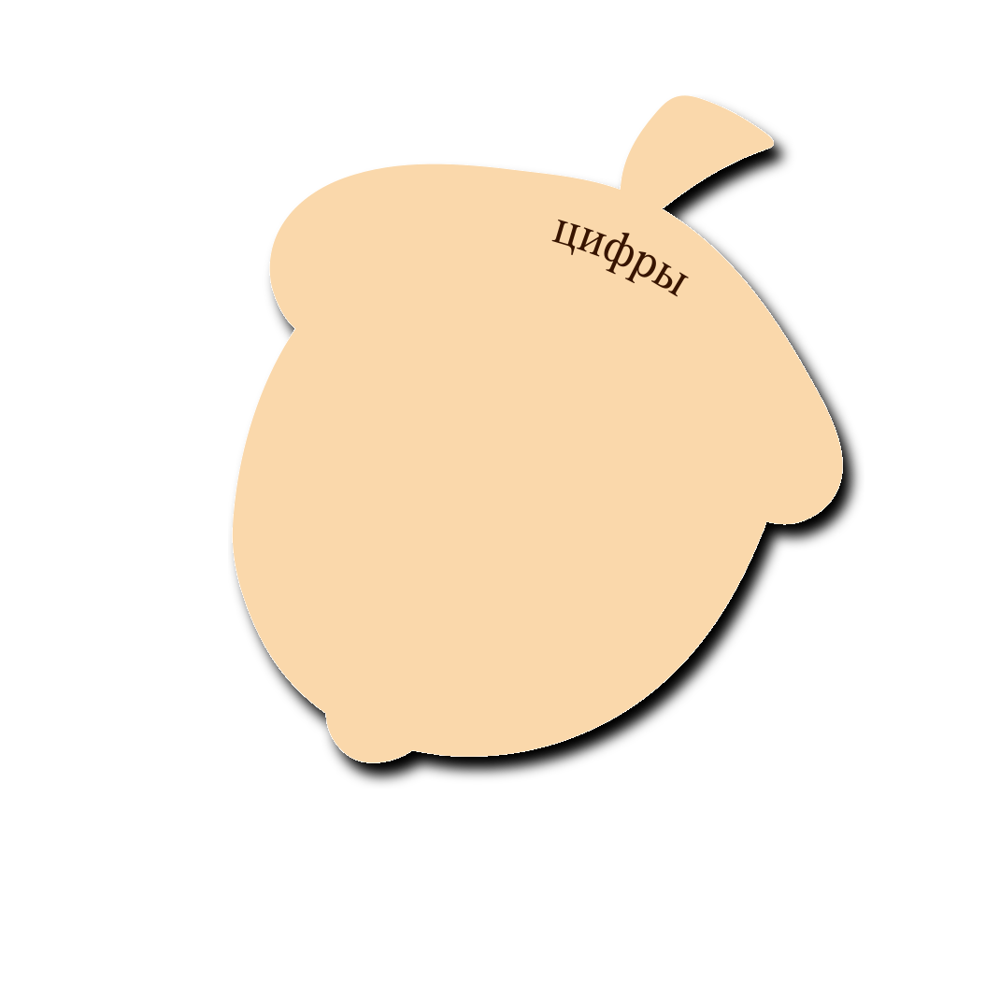
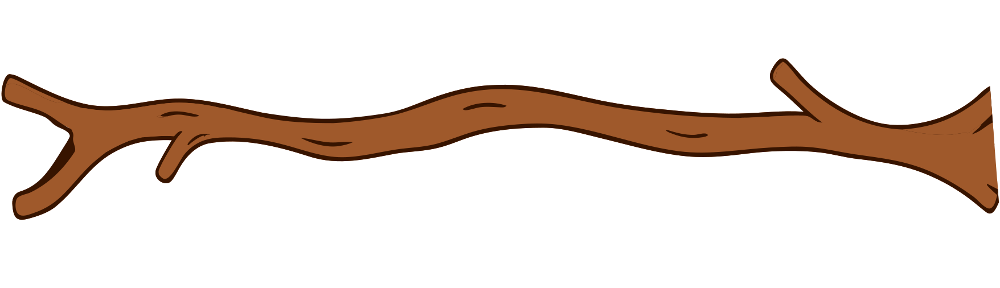
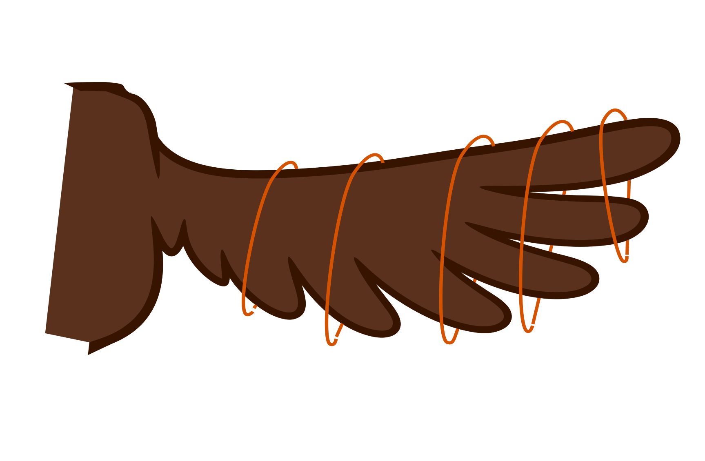
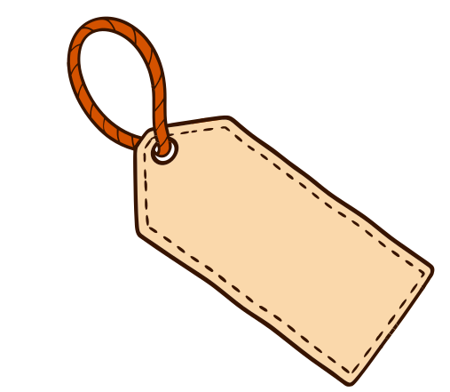
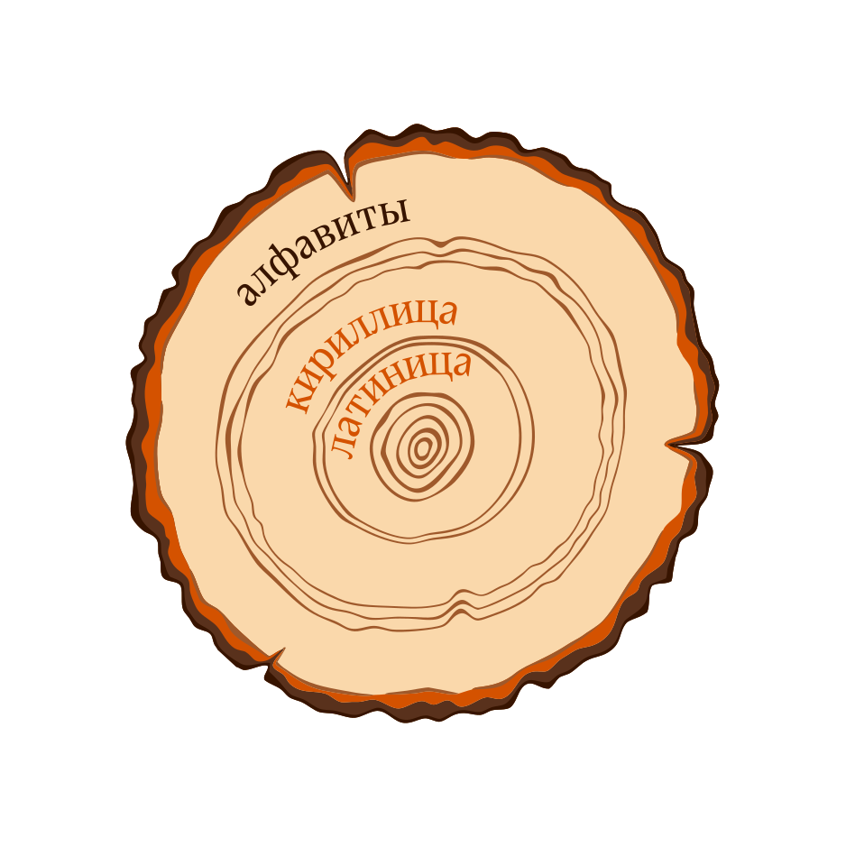
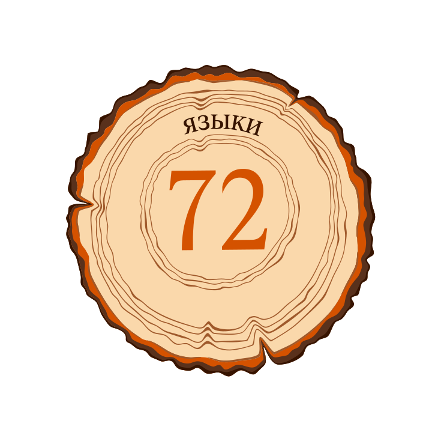
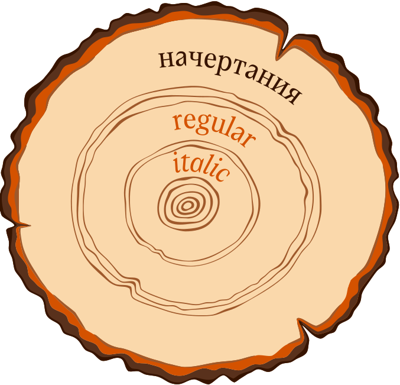
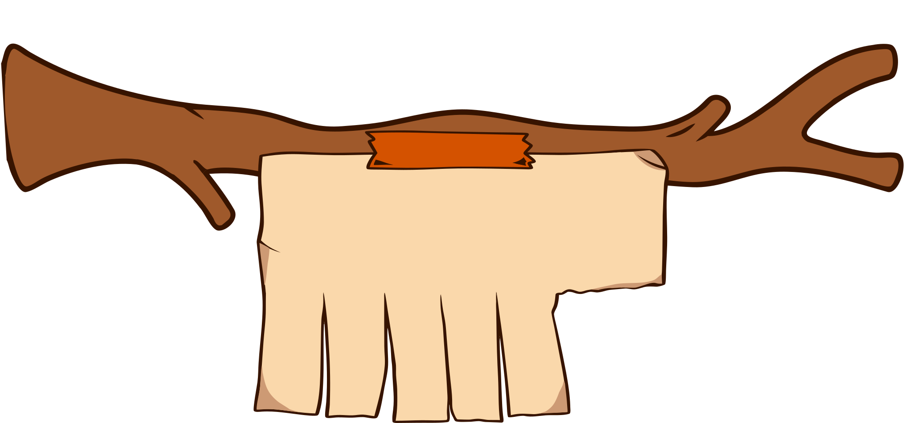
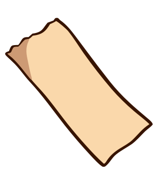
Шрифт особенно хорошо раскрывается в среднем и крупном
кегле, поэтому идеально подходит для заголовков и проектов,
где типографика должна привлекать внимание. При этом
его плотный рисунок позволяет использовать гарнитуру
и в небольших текстовых блоках, хотя для длительного
чтения необходимо учитывать насыщенность набора.
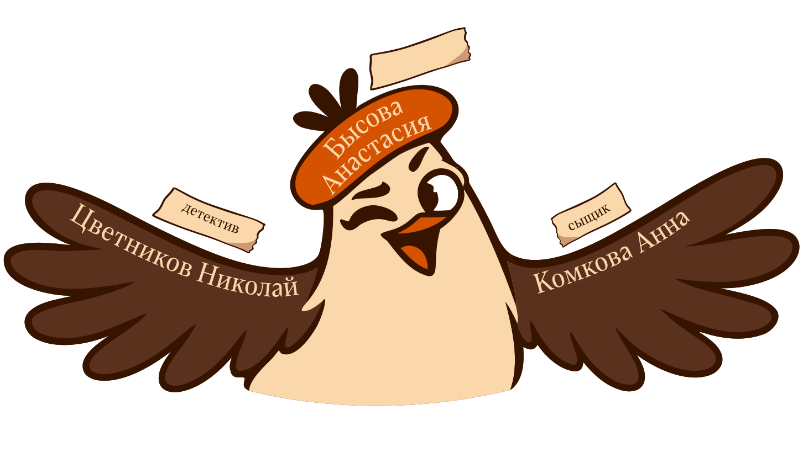
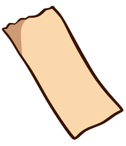